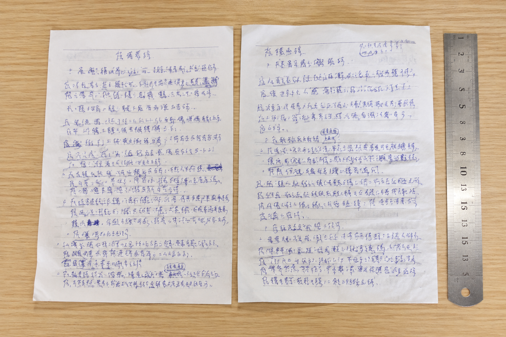

把字放大后反而看不准？模仿笔迹比较中的比例误差
两张字迹并排摆在屏幕上，一张显得舒展，另一张显得紧凑，未必是书写者改变了习惯。图片缩放不同，就足以改变第一眼的印象。

先问图片放大了多少
手机照片、扫描件和聊天截图常被一起拿来比较。扫描件有固定的页面尺寸，照片却会随着裁切改变比例。把两张图的姓名调到一样宽，再判断字形是否相近，实际上已经人为消除了一部分差异。比较前应先找纸张边缘、格线或其他尺寸已知的参照；没有参照时，只能说明局部结构，不能直接断定原字大小。
整页与局部各留一份
模仿笔迹涉及的不只是单字轮廓。字在纸上的大小、段落位置、左右留白也属于阅读时能感受到的整体特征。整页图用于交代这些关系，局部图用于看笔画。两份文件保持对应页码，放大局部时也能随时回到整页，避免把裁切后的画面当成原来的布局。
固定姓名也会遇到同样的问题
模仿签名和模仿签字的参考材料经常只剩一个姓名截图。缺少签名栏、日期及周围文字，就很难判断姓名究竟写了多大。观察时可记录各字之间的相对关系，同时把绝对尺寸列为待核实项目。图片清晰与尺寸可靠是两件事，像素很多也不能补回被裁掉的参照。
比较结果应当交代图像条件
用于笔迹鉴定的图像资料，应说明来自原件拍照、复印扫描还是二次截图。来源不清的图片可以先整理，但不宜把放大后的线条粗细直接解释为用笔力度。能补充原件或同尺度扫描时，先补材料，再回看之前的判断，通常比继续拉高屏幕放大倍数更有意义。